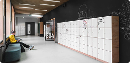
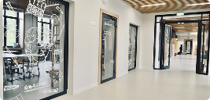
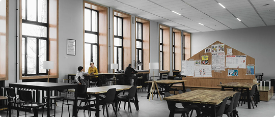

Мягкий вход в школу с 5,5 лет: персональная диагностика, «Школа для родителей». День с 8:30 до 16:30.
Фундамент без страха ошибки: тьютор рядом, картина мира вместо оценок.
Проекты, олимпиадная подготовка, первые собственные результаты и защита «Моего первого проекта».
Карьерный трек, подготовка к ЕГЭ, «Мой главный проект» перед комиссией с представителями вузов.
Отдельный маршрут для семей, которые меняют школу: диагностика, план адаптации, быстрые ответы.
Тот же подход - из любого города: кураторы, тьюторы, проекты и олимпиады в дистанционном формате.



Фото - реальные интерьеры школы на Ползунова, 7. Кадры с детьми появятся после согласования с родителями - так положено, и мы так делаем.
Персональная диагностика на входе показывает точку старта. Дальше рядом с ребёнком - тьютор, а у родителей - понятная картина: что получается, где нужна поддержка, куда двигаемся.
Олимпиадная школа и проектная деятельность уже включены в программу: от «Моего первого проекта» в 5-7 классе до защиты перед комиссией с представителями вузов в 11-м.
Формат - очно на Ползунова, 7 или онлайн из любого города.
Бесплатная персональная диагностика и экскурсия по школе: посмотрите пространство, познакомьтесь с тьюторами, получите честную картину по вашему ребёнку.